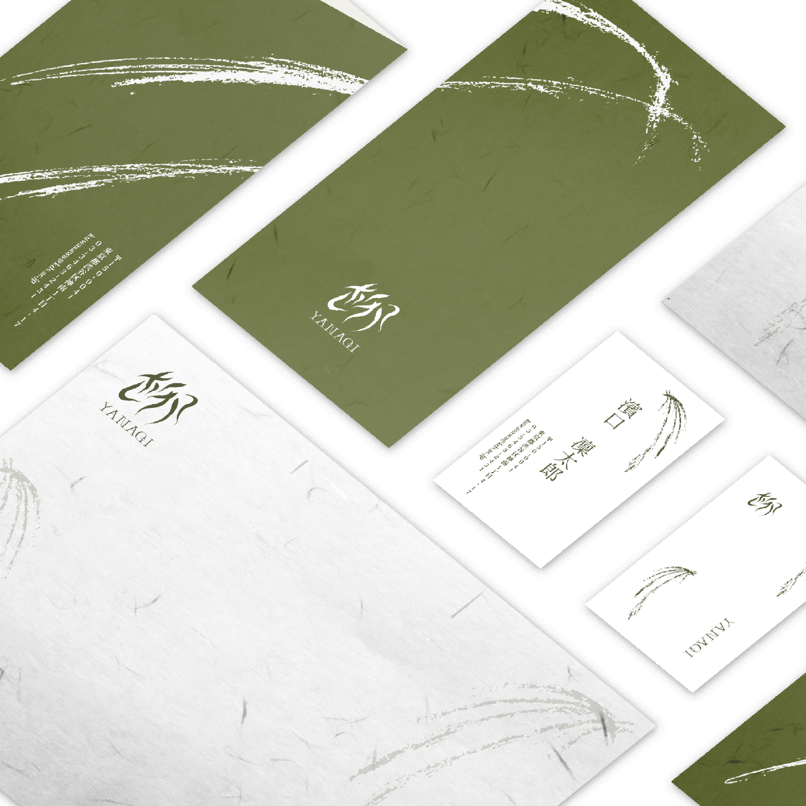
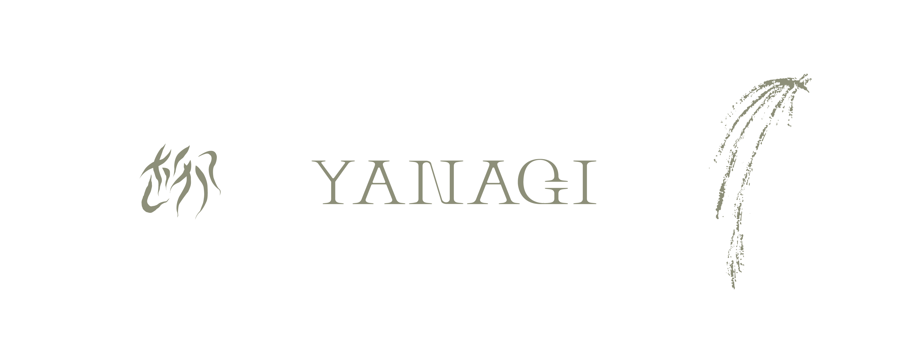

架空の日本酒をメインアイテムとしたカフェ「柳（YANAGI）」の名刺、レターヘッド、封筒の3点のステーショナリーブランディングを行いました。
使用したツール
Illustrator・・・ロゴデザイン、レイアウト等
Photoshop・・・本ページのモックアップ画像の作成
手書きスケッチ・・・デザインエレメントの描画
ブランディングについて
東京都内を中心に20代から50代の男女、かつ国内外の出身地を問わず、日本というブランドをバックボーンに構え、多様性を受け入れるような日本酒が呑めるカフェとしてブランドを定義しました。 さまざまなカルチャーが混じり合う東京という日本の中心地においても、和調の気品さと機敏なデザイン性を兼ね備えられるような佇まいをめざしました。
デザインについて
各ステーショナリーアイテムに配置されている、靡いた線が集まった形状のマークが「柳（YANAGI）」のブランドロゴになります。 「柳」という漢字を基に、柳の木の独特な細長くしなやかな、風に揺られるような葉を文字自体にあてがい、 和調かつ個性を持ちながら都会に馴染んでいくような洗練されたブランドロゴを目指しました。 メインロゴに添えられているロゴタイプは、これにおいても柳の木や葉をモチーフに、太い部分と細い部分を交えた「YANAGI」というオリジナルフォントになっています。 日本の伝統色である「灰緑」を基調としており、それぞれのアイテムにしなやかさと筆で描かれたような勢いをイメージするような、装飾デザインを施しました。
